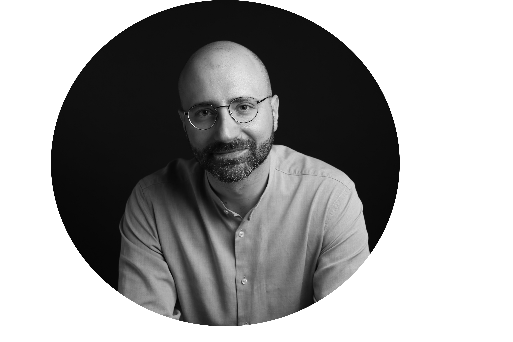

Écrire, traduire, transmettre
Email : pietro.milli[at]gmail.com
2025 - Le musée Ala Ponzone de Crémone, une collection de deux mille œuvres d’art, La Gazette Drouot.
2025 - À la découverte du plus ancien clavecin français, sans doute réalisé pour Louis XIV, La Gazette Drouot.
2024 - Le clavecin Ruckers à l'honneur à Colmar, La Gazette Drouot.
2024 - Concerto italien pour un clavecin, La Gazette Drouot.
2024 - Une collection de précieux instruments de musique des XVIIe et XVIIIe siècle, La Gazette Drouot.
2024 - Un violon “de poche” de Romain Chéron pour faire danser Louis XIV, La Gazette Drouot.
2025 - Femmes de légende, Orchestre Divertimento.
2025 - Brio, Orchestre Divertimento.
2025 - Concert des ambassadeurs Rolex, Opéra national de Paris.
2025 - Gala anniversaire pour les 150 ans du Palais Garnier, Opéra national de Paris.
2025 - Leoš Janáček, La Petite Renarde rusée, « La musique de l'arbre de vie », Opéra national de Paris.
2024 - Igor Stravinsky, Maurice Ravel, Opéra national de Paris / Philharmonie de Paris.
2024 - Dmitri Chostakovitch, Symphonie n°4, « Écouter sa muse, déjouer la peur », Opéra national de Paris / Philharmonie de Paris.
2024 - Giacomo Puccini, Madame Butterfly, « L'illusion du désir exaucé », Opéra national de Paris.
2024 - Thomas Adès, The Exterminating Angel, « Le pouvoir d'un nœud intérieur », Opéra national de Paris.
2023 - Olivier Messiaen, Joseph Haydn, Maurice Ravel, Richard Strauss, Opéra national de Paris / Philharmonie de Paris.
2022 - Richard Strauss, Salomé, « Richard Strauss, l'inclassable », Opéra national de Paris.
2022 - György Kurtág, Fin de partie, « Mot, musique, mémoire », Opéra national de Paris. Traduction néeralandaise : « Woord, Muziek, Herinnering », Opera Ballet Vlaanderen.
2024 - Maria Callas et la vie de l'émotion, DCLP.
2022 - La pedagogia a spirale nei programmi di educazione musicale dei “collèges” francesi, Musica Docta.
2022 - Énigmes du double et avatars de la monstruosité : The Minotaur de Harrison Birtwistle, Delatour.
2022 - Le corps dans La Passion selon Sade de Sylvano Bussotti, Synthèses & Hypothèses.
2022 - Art et révolution en devenir chez Luigi Nono et Giacomo Manzoni, Société des Études Robespierristes.
2021 - L’idéal qui donne sa lumière au silence : Antonio Gramsci et la culture musicale italienne de l’après-guerre, Transposition.
2020 - Dialectics and Matter in the Aesthetics of Giacomo Manzoni, Archival Notes.
2020 - Essere compositore secondo Jean Barraqué, ITAMAR.
2020 - Dal testo alla musica: percorsi compositivi, Mudima.
2015 - Représenter le compositeur entre réalité et fiction : le cas Schoenberg/Adrian Leverkühn/Manzoni, Analyse musicale.
2025 - Gino Brazzoduro, Œeuvre poétique II, avec Laurent Feneyrou, Triestiana Éditions.
2025 - Giulio Camber Barni, La Buffa, avec Laurent Feneyrou, Triestiana Éditions.
2025 - Claudio Grisancich, Nous viendrons, avec Laurent Feneyrou, Triestiana Éditions.
2025 - Léon-Paul Fargue, Venezia! o mia bella, Robin Edizioni, avec Juan Salvador Velecela.
2024 - Virgilio Giotti, Soir, avec Laurent Feneyrou, Triestiana Éditions.
2024 - Carolus L. Cergoly, Ponterosso, avec Laurent Feneyrou, Triestiana Éditions.
2024 - Fedoro Tizzoni, Canonnades, avec Laurent Feneyrou, Triestiana Éditions.
2023 - Biagio Marin, La Guirlande de ma sœur, avec Laurent Feneyrou, Triestiana Éditions.
2023 - Nicola Abbagnano, La Structure de l'existence, l'Harmattan.
2023 - Gino Brazzoduro, Œeuvre poétique I, avec Laurent Feneyrou, Triestiana Éditions.
2022 - Virgilio Giotti, Petit chansonnier amoureux, avec Laurent Feneyrou, Triestiana Éditions.
2022 - Fery Fölkel, Balivernes, avec Laurent Feneyrou, Triestiana Éditions.
2021 - Léon-Paul Fargue, Maurice Ravel et Per la musica, Edizioni dell'Orso.
2025 - Kandinsky et la musique à la Philharmonie de Paris : tout l'univers du peintre restitué avec finesse, La Gazette Drouot.
2024 - Le Boléro de Ravel enchante la Cité de la musique, La Gazette Drouot.
2021 - Florian Gulli et Jean Quétier, Découvrir Gramsci, Lectures.
2020 - Eirick Prairat (dir.), « La sanction en éducation », Revue internationale d’éducation, Lectures.
2019 - Marie Baltazar, Du bruit à la musique. Devenir organiste, Lectures.
2019 - Jean-Marie De Ketele (dir.), « Figures de l’éducation dans le monde », Revue internationale d’éducation, Lectures.
2020 - Giacomo Manzoni, Parole per musica, Dictéco.
2020 - Giacomo Manzoni, A. Schönberg. L'uomo, l'opera, i testi musicati, Dictéco.
2020 - Giacomo Manzoni, Per Massimiliano Robespierre, Dictéco.
2019 - Jean Barraqué, Écrits, Dictéco.
2019 - Jean Barraqué, Debussy, Dictéco.
2019 - Jean Barraqué, Analyse de la Cinquième Symphonie de Beethoven, Dictéco.
2019 - Luigi Nono, Écrits, Dictéco.
2019 - Giacomo Manzoni, Tradizione e utopia, Dictéco.
2018 - Giacomo Manzoni, Écrits, Dictéco.
2018 - Giacomo Manzoni, Scritti, Dictéco.
2018 - Giacomo Manzoni, Musica e progetto civile. Scritti e interviste, Dictéco.
2025 - Léon-Paul Fargue, Venezia! o mia bella, Robin Edizioni, avec Juan Salvador Velecela.
2025 - Nicola Abbagnano, La struttura dell'esistenza, UTET.
2023 - Nicola Abbagnano, La Structure de l'existence, l'Harmattan.
2021 - Léon-Paul Fargue, Maurice Ravel / Per la musica, Edizioni dell'Orso.
2025 - Marie-Pauline Martin et Alexandre Girard-Muscagorry redessinent le musée de la Musique, La Gazette Drouot.
2023 - Professione organologo. Jean-Philippe Échard e il mito Stradivari, Music Paper.
2023 - Jean-Philippe Échard : aux sources du mythe Stradivarius, La Gazette Drouot.
2025 - Éditions Triestiana, poésie de Trieste, avec Laurent Feneyrou, Librairie L'Atelier (Paris).
2021 - Insaisissable Trieste / Biagio Marin, poète vernaculaire, avec Laurent Feneyrou, Institut Culturel Italien de Paris.
2019 - Mourir en révolutionnaire (XVIIIe-XXe siècle) : « Mythologies révolutionnaires, l’exemple de la création artistique italienne du début des années 1970 », Université de Rouen Normandie, GRHis.
2019 - Corps, normes, genre : discours et représentations de l’Antiquité à nos jours : « Voix de femmes : les normes sociales à l’épreuve de la création musicale italienne des années 1960-1970 », Université de Rouen, ERIAC.
2019 - La musique dans les autres arts : poïétique, fonction, signification : « L'hybridation artistique comme outil critique. Préalables philosophiques et enjeux esthétiques dans Atomtod de Giacomo Manzoni », Université de Strasbourg, MISHA.
2017 - Empires et impérialismes : États, guerres, sociétés, patrimoines : « Atomtod de Giacomo Manzoni : une critique de l’impérialisme », Université de Rouen Normandie, GRHis.
2016 - Frontières, mobilités, territoires : « Sons sans frontières », Université de Rouen Normandie, GRHis.
2015 - Conflits, débats, rencontres : « Musique moderne et postmoderne selon Giacomo Manzoni », Université de Rouen Normandie, GRHis.
2013 - Un lieu de musique réinvente-t-il la ville ? : « L’Auditorium del Parco de Renzo Piano : la valeur symbolique d’une œuvre éphémère », École des Hautes Études en Sciences Sociales.
2025 - La casa editrice Triestiana, avec Luisa Antoni, Quarta di copertina.
2025 - Les poètes triestins, avec Mathhias Énard et Laurent Feneyrou, France Culture.
2025 - Una piccola casa editrice francese promuove Oltralpe la letteratura e la poesia triestina, avec Lorenzo Gherlinzoni, TGR Rai Friuli Venezia Giulia.
GitHub Pages ; Theme by orderedlist ; © 2025.